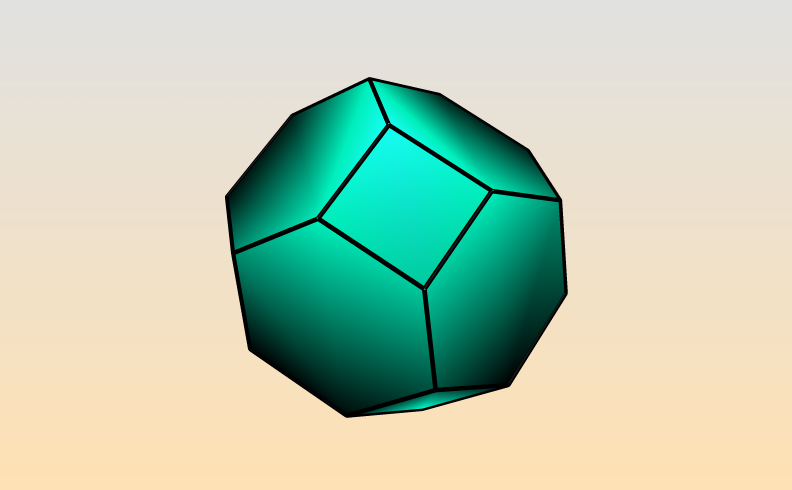
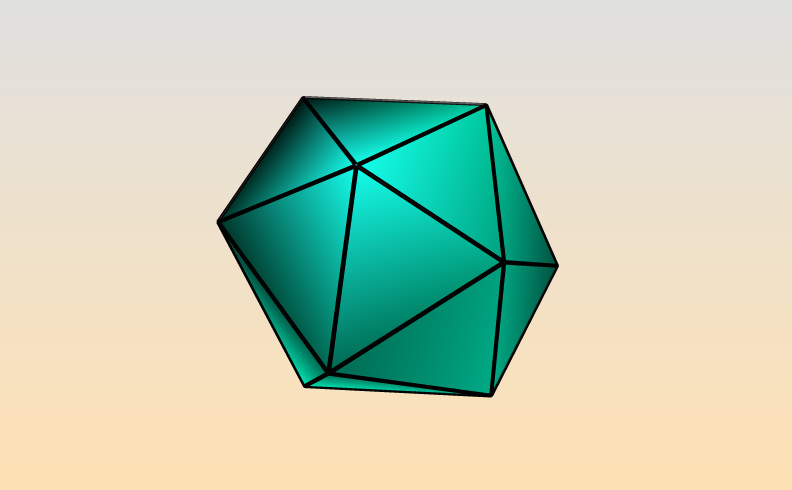
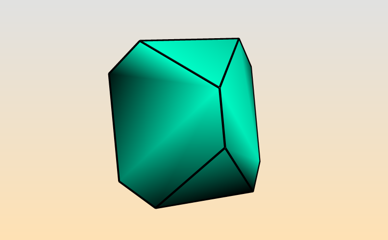
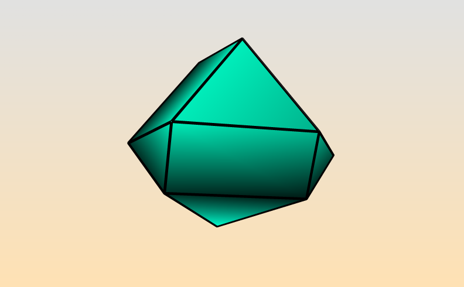
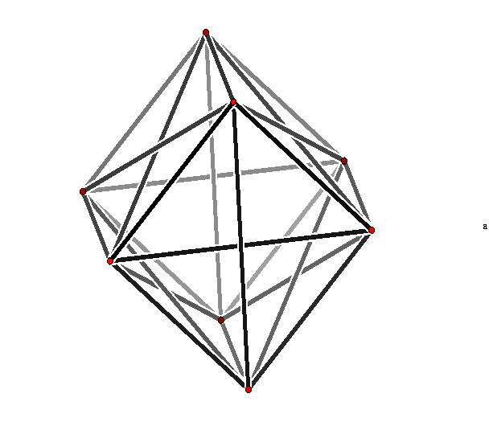
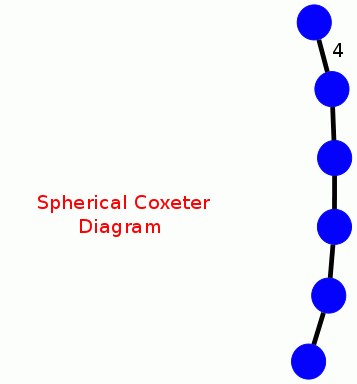

|
|||
|---|---|---|---|
|
Polytopes, Resolutions and Group
Presentations
Suppose that G is a permutation group of degree n or a finite group of n×n orthogonal real matrices. In both cases we can try to use the action of G on Euclidean n-space Rn to obtain homological information about G. We do this by choosing a vector v in Rn which is fixed by no non-trivial element in G. Such a v is said to be in general position and always exists. We then form the convex hull of the vectors in the orbit of v under the action of G. This hull is a convex polytope which we denote by P(G,v). Its combinatorial structure can be accessed using the Polymake computational geometry software package. Consider for example the symmetric group S4 acting on R4 by permuting basis vectors. In this case a vector v is in general position if its coordinates are distinct, and the polytope P(S4,v) lies in the 3-dimensional hyperplane consisting of all points whose coordinate sum equals the sum of the coordinates in v. Using the fact that S4 is a finite reflection group we can show that the polytope P(S4,v) has the same combinatorial structure for each general position vector v in R4 . The polytope can be vizualized using the following commands (which call Polymake functions). |
|||
| gap>
OrbitPolytope(SymmetricGroup(4),[1,2,3,4],["visual"]); 
|
|||
| The
linearity
of the action implies that G permutes the k-faces of P(G,v)
in each dimension k. The cellular chain complex C*(P(G,v))
of the polytope is thus a ZG-equivariant chain complex. It is in fact a
ZG-resolution of the trivial module Z since the polytope is
contractible. In general this will not be a free resolution. The following commands first compute the chain complex C*(P(G,v)) for G=S4 and v=[1,2,3,4], then show that there are 3 orbits of edges and three orbits of facets. |
|||
| gap>
G:=SymmetricGroup(4);;v:=[1,2,3,4];; gap> P:=PolytopalComplex(G,v); Non-free resolution in characteristic 0 for <matrix group of size 24 with 2 generators> . No contracting homotopy available. gap> P!.dimension(0); 1 gap> P!.dimension(1); 3 gap> P!.dimension(2); 3 gap> P!.dimension(3); 1 |
|||
| The
following additional commands use the non-free resolution P to
construct three terms of a free ZG-resolution of Z for G=S4,
and then use this resolution to comute the second homology of G. |
|||
| gap>
R:=FreeGResolution(P,3); Resolution of length 3 in characteristic 0 for <matrix group of size 24 with 2 generators> . No contracting homotopy available. gap> Homology(TensorWithIntegers(R),2); [ 2 ] |
|||
| For
groups G that are not reflection groups the combinatorial structure of
the polytope P(G,v) will depend on the choice of general position
vector v. The following commands illustrate this for the alternating
group G=A4 and three choices of general position vectors
u=[1,2,2,4], v=[1,2,3,4], w=[1,1,3,4]. |
|||
| gap>
OrbitPolytope(AlternatingGroup(4),[1,2,3,4],["visual"]); gap> OrbitPolytope(AlternatingGroup(4),[1,1,3,4],["visual"]); gap> OrbitPolytope(AlternatingGroup(4),[1,2,2,4],["visual"]); 
|
|||
| The
resolutions obtained from P(G,v) will also vary with the choice of
general position v. For instance, continuoing with the last example we
obtain three different free resolutions for G=A4 and then
use these resolutions to obtain three different presentations of A4.
|
|||
| gap>
P:=PolytopalComplex(AlternatingGroup(4),[1,2,3,4]);; gap> R:=FreeGResolution(P,3);; gap> Y:=PresentationOfResolution(R);; gap> Y.freeGroup; <free group on the generators [ f1, f2, f3 ]> gap> Y.relators; [ f2^-2, f1*f3*f2^-1, f1^3, f3^3 ] gap> P:=PolytopalComplex(AlternatingGroup(4),[1,1,3,4]);; gap> R:=FreeGResolution(P,3);; gap> Y:=PresentationOfResolution(R);; gap> Y.freeGroup; <free group on the generators [ f1, f2 ]> gap> Y.relators; [ f1^-2, f2^3, f1^3*f2^-3 ] gap> P:=PolytopalComplex(AlternatingGroup(4),[1,2,2,4]);; gap> R:=FreeGResolution(P,3);; gap> Y:=PresentationOfResolution(R);; gap> Y.freeGroup; <free group on the generators [ f1, f2 ]> gap> Y.relators; [ (f1*f2^-1)^2, f1^3, f2^3 ] |
|||
| Orbit
polytopes
and
associated finite presentations for other 3-dimensional
isometry groups are available here. |
|||
|
Periodic
Resolutions
The cellular chain complex C*(P(G,v)) is a complex of ZG-modules which, thanks to the contractibility of the polytope, has trivial homology in all but its top and bottom dimensions; its homology groups are infinite cyclic in both the top and bottom dimensions. Thus infinitely many copies of C*(P(G,v)) can be spliced together to form an infinite periodic ZG-resolution P* of Z. In general P* is not a free ZG-resolution. But sometimes it is free, and the homology of G is then periodic with period equal to the dimension of P(G,v). The resolution P* is free if all faces of the polytope (except the single top dimensional face) have trivial stabilizer group. For example, the usual 2-dimensional complex representation of the group Q of quaternions can be regarded as a 4-dimensional real representation. The group Q has order eight, and the 1-skeleton of the 4-dimensional polytope P(Q,v) can be pictured using the following commands. |
|||
| gap>
A:=[[0,-1,0,0,],[1,0,0,0,],[0,0,0,1],[0,0,-1,0]];; gap> B:=[[0,0,-1,0],[0,0,0,-1],[1,0,0,0],[0,1,0,0]];; gap> Q:=Group([A,B]);; gap> OrbitPolytope(Q,[1,0,0,0],["visual_graph"]); 
|
|||
| The following additional commands show that the polytope P(Q,v) yields a free ZQ-resolution of period 4. | |||
| gap>
P:=PolytopalComplex(Q,[1,0,0,0]);; gap> for k in [1..3] do > for n in [1..P!.dimension(k)] do > Print(Order(P!.stabilizer(k,n)),"\n"); > od;od; 1 1 1 1 1 1 1 1 1 |
|||
| The
following additional commands show that the quaternion group has third
integral homology H3(Q,Z)=Z8 |
|||
| gap>
TP:=TensorWithIntegers(P);; gap> Homology(TP,3); [ 8 ] |
|||
| The
following
additional
command
yields
the
satisfying
group presentation Q = < i, j, k : ij=k, jk=i,
ki=j, ikj=1>
for the quaternion group Q.
|
|||
| gap>
PresentationOfResolution(P); rec( freeGroup := <free group on the generators [ f1, f2, f3 ]>, relators := [ f2*f3^-1*f1^-1, f3*f2*f1^-1, f1*f2*f3, f1*f3^-1*f2 ] ) |
|||
|
Resolutions
for
Finite
Reflection
Groups
For a finite reflection group G the structure of the polytope P(G,v) is well-understood and can be constructed via theoretical methods and without recourse to expensive convex hull computations. The following commands construct a free resolution, via theoretical methods, for the finite reflection group of type B6 and order 46080. The resolution is then used to compute the integral homology of G in degree 4. |
|||
| gap>
D:=[[1,[2,3]],[2,[3,3]],[3,[4,3]],[4,[5,3]],[5,[6,4]]];; gap> CoxeterDiagramDisplay(D); 
gap>
R:=ResolutionCoxeterGroup(D,5);;
gap>
Homology(TensorWithIntegers(R),4);
[ 2, 2, 2, 2, 2, 2, 2, 2, 2, 2, 2, 2, 2, 2 ] |
|||
|